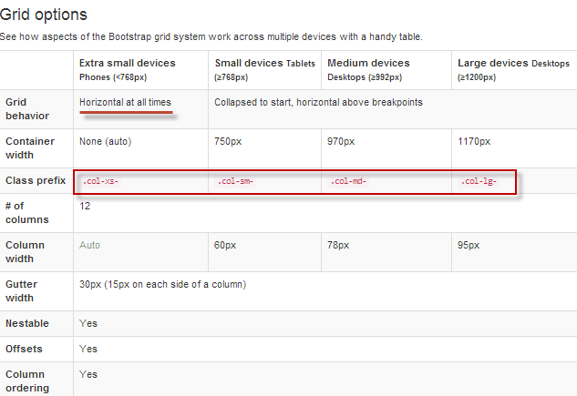

Эта статья посвящена сеточной системе, используемой в Bootstrap 3. Вы узнаете, какие размеры сеток можно применять, как они себя будут вести на устройствах с разным размером экрана и как самим создавать ряды и ячейки на основе одной или нескольких сеток. Все это будет рассказано на примерах, что, надеюсь, улучшит восприятие.
Как работает сеточная система в Bootstrap 3
Bootstrap 3 идет в комплекте с двенадцатиколоночной сеточной системой, которая рассчитана в основном на мобильные устройства. Т.е. она разработана с прицелом в первую очередь именно на маленькие дисплеи, в уже во вторую — на широкие экраны. В новой версии этого фреймворка есть четыре размера сетки. Всю эту информацию можно подробно изучить на официальном сайте GetBootstrap.com, перейдя на вкладку «CSS» из верхнего меню и выбрав пункт «Grid system» в правом.
Там вы получите полное объяснение принципов работы системы, относящихся к ней медиа запросов и т.п. Тот ряд Html элементов (например, анонсы статей на главной странице), который вы захотите позиционировать в сетке, нужно будет окружить контейнером (например, заключить в теги Div) и прописать для него класс .row (выглядеть открывающий тег в этом случае будет как <div class="row">).
Ну, а сами элементы внутри ряда вы сможете распределить по одной или сразу по нескольким типам сеток с помощью прописывания атрибута class со значением, например, .col-xs-цифра (в этом случае используется только сверхмалая сетка).
Для примера, если вам нужно получить в результате три равные по размеру колонки, то нужно разделить 12 (размерность сетки в Bootstrap 3) на 3 (требуемое число колонок). Значит для каждого Html элемента внутри ряда (это опять же могут быть контейнеры Div) нужно будет прописать одинаковые классы — <div class="col-xs-4">. Если нужны колонки не равной ширины, то нужно будет просто соблюсти условие, при котором цифры после col-xs- во всех трех классах в сумме должны составлять 12 (например, 2-4-6). Но прежде давайте рассмотрим, что такое «xs» в этой записи и что это значит?
Чуть ниже в области «Grid options» вы найдет объяснение упомянутых выше четырех размеров сетки современного Бутстрапа.

Последние три сетки будут горизонтальными лишь при размерах экрана по ширине больше точки, при которой наступает «коллапс» (слом). Например, для большой сетки на экранах размером меньше 1200 пикселей она перестанет быть горизонтальной и превратится в вертикальную. На странице официального сайта GetBootstrap.com, которую мы сейчас рассматриваем, приведены примеры и пояснения по этому поводу. Однако, на мой взгляд, там все несколько путано и сложно.
Пример работы сеточной системы Bootstrap 3 при разной ширине экрана
Попробую пояснить все это на готовом примере. Вам нужно будет лишь скопировать файлик setka.html (для этого кликните по ссылке правой кнопкой мыши и выберите из контекстного меню пункт «Сохранить по ссылке как...»). Если этот файлик вы напрямую откроете в браузере (кликнув по приведенной ссылке левой кнопкой мыши), то ничего не получится, ибо не подключится фреймворк Бутстрап.
Скачанный файлик setka.html поместите в папку Bootstrap, о которой мы говорили в первой статье этого цикла по Бутстрапу. Он должен находиться на том же уровне, что и созданный нами ранее файл index.html.
Теперь откройте этот файлик setka.html в любом удобном для вас браузере и произведите ряд экспериментов с размером окна вашего обозревателя, чтобы увидеть работу Bootstrap 3 в действии и понять работу сеточной системы. Каких именно? Сейчас объясню.
У меня разрешение экрана монитора по ширине составляет 1280 пикселей, что больше точки слома в 1200 пикселей, заданной для большой сетки. Что мы видим в результате? Примерно такую картину:

Здесь приведены пять примеров макета сайта, построенных на разных типах сеток:
Таким образом мы сможете пронаблюдать и сравнить, как эти сетки из арсенала Bootstrap 3 работают вместе и как работают по отдельности (при использовании только одного типа). Т.к. мой браузер при снятии предыдущего скриншота был развернут на весь экран (по ширине больший, чем 1200 пикселей), то все эти пять примеров макета сайта развернуты по горизонтали (колонки расположены рядом друг с другом по ширине экрана).
Теперь давайте чуток сузим размер окна браузера, чтобы по ширине оно стало меньше 1200, но больше 992 пикселей, и пронаблюдаем произошедший слом (коллапс).

Текст над верхним рядом и префиксы класса в его ячейках поменялись (для этого использовались классы видимости, о которых еще будем говорить). Теперь уже используется средняя сетка, которая по-прежнему отображается по горизонтали. В это же время самый нижний ряд (который иллюстрирует применение только крупной сетки) сложился вертикально, т.е. соседние блоки отображаются теперь не друг рядом с другом по ширине, а друг под другом (по высоте).
Получается, что крупная сетка в отсутствии какого-либо внешнего влияния ведет себя именно таким образом — складывается по вертикали на всех устройствах, размер экрана которых по ширине меньше 1200 пикселей. При этом все остальные, используемые в примере сетки, отображаются горизонтально. В первом ряду используется комбинация сеток, поэтому сейчас он контролируется средней сеточной системой (крупная система уже эффекта не имеет).
Давайте еще раз уменьшим размер окна браузера по ширине так, чтобы оно стало больше 768, но меньше 992 пикселей. Произойдет очередной слом:

Теперь (исходя из размера экрана) мы работаем с маленькой сеткой. Соответственно, уже не только крупная, но и средняя сетка тоже сложилась вертикально. Ну, а в первом ряду, где используется комбинация сеток, сейчас все контролируется малой сеточной системой Бутстрапа. При этом, в файле setka.html меняется еще и распределение колонок в этом первом ряду, что вовсе не обязательно, но так вполне можно делать для удовлетворения каких-то своих нужд в плане верстки (причем на «раз-два», вообще без проблем).
Продолжаем уменьшать ширину окна браузера до значений меньших 768 пикселей. Происходит очередной слом:

В результате, уже не только крупная и средние сетки идут по странице вертикально, но к ним еще присоединилась и малая. Единственной горизонтальной осталась очень маленькая сетка, которая остается таковой (как мы смогли только что убедиться) при любых обстоятельствах. Даже если заузить страницу до сверхмалой ширины, сверхмалая сетка не превратится в вертикальную (даже когда контент не будет помещаться в ячейках).

Этот пример (файлик setka.html) сделан именно для наглядного отображения поведения сеточной структуры Bootstrap 3. Про то, как там все устроены, мы еще будем подробно говорить. Но пока я хочу обратить ваше внимание лишь на некоторые нюансы, которые вы сможете заметить в исходном коде файла setka.html.
Пояснения к исходному коду нашего примера
Вверху с помощью тегов Style добавлены стили для визуального оформления макетов (отступы, цвета сеток и т.п.), которые особой смысловой нагрузки не несут. Если прокрутите исходный код вниз, то заметите такой вот блок:
Здесь четыре контейнера, для которых назначены разные классы (читайте про атрибуты class и id). Они позволяют отображать конкретный контент в зависимости от медиазапросов, соответствующих различным размерам сетки. Как это работает? Все четыре заголовка загружаются в браузер (если посмотреть исходный код), но только один заголовок отображается в зависимости от текущего разрешения экрана или размера окна браузера.
Дальше в исходном коде идет формирование первого ряда :
|
<div class="col-lg-4 col-md-1 col-sm-5 col-xs-5"> <span class="visible-lg">.col-lg-4</span> <span class="visible-md">.col-md-1</span> <span class="visible-sm">.col-sm-5</span> <span class="visible-xs">.col-xs-5</span> </div> <div class="col-lg-4 col-md-5 col-sm-1 col-xs-6"> <span class="visible-lg">.col-lg-4</span> <span class="visible-md">.col-md-5</span> <span class="visible-sm">.col-sm-1</span> <span class="visible-xs">.col-xs-6</span> </div> <div class="col-lg-4 col-md-6 col-sm-6 col-xs-1"> <span class="visible-lg">.col-lg-4</span> <span class="visible-md">.col-md-6</span> <span class="visible-sm">.col-sm-6</span> <span class="visible-xs">.col-xs-1</span> </div> </div> |
Это мастер-сетка, где скомбинированы все четыре сеточные системы (вы это можете видеть по атрибутам ячеек подобным class="col-lg-4 col-md-1 col-sm-5 col-xs-5", в которых перечислены префиксы классов всех четырех сеток). Сам ряд, как уже упоминалось выше, задается с помощью помещения всех составляющих его элементов в контейнер с классом class="row" (в нашем примере это контейнер на основе div).
Обратите внимание, что мастер-сетка у нас состоит из трех ячеек (колонок) и если вы сложите все цифры, которые приписаны для каждой из колонок, например, для префиксов сверхмалой сетки Бутстрапа (col-xs), то получите в сумме 12. То же самое будет справедливо и для цифр, стоящих после префиксов всех остальных систем. Оно и понятно, ибо этот фреймворк, как уже говорилось выше, имеет 12 колоночную структуру, т.е. по горизонтали все доступное для макета пространство разделено на двенадцать равных по ширине колонок (невидимых на сайте — они подобны клеточкам в школьных тетрадях).
Ну и с помощью цифр после префиксов классов вы просто задаете пропорции для каждой из ячеек (реальных колонок) своего макета. Т.е. пропорции могут быть например, такими:


Вообще, можно использовать как одну, так и две, три или все четыре сеточные системы в одном макете (строке). Все это зависит от ваших предпочтений в дизайне и того, что вы пытаетесь добиться от свой вебстраницы (как это должно все выглядеть при разных расширениях экрана). На официальном сайте приведен пример:

Например, далее в исходном коде файла setka.html вы найдете ряд, где используется только одна сеточная система (сверхмалая с префиксом класса col-xs).
|
<div class="col-xs-5"> <p>.col-xs-5</p> </div> <div class="col-xs-6"> <p>.col-xs-6</p> </div> <div class="col-xs-1"> <p>.col-xs-1</p> </div> </div> |
Создание рядов (строк) и ячеек с помощью классов Бутстрапа
Давайте теперь для наилучшего понимания создадим Html страницу, чем-то напоминающую реальную вебстраницу (с хедером, текстовым и графическим содержимым, а также футером) и разметим ее с помощью сеточной системы Bootstrap 3.
Точнее, создам заготовку я сам, а вам лишь предложу по аналогии с предыдущим примером скачать файлик sait.html (для этого кликните по ссылке правой кнопкой мыши и выберите из контекстного меню пункт «Сохранить как...»), чтобы уже потом вместе дописывать к этой «рыбе» нужные классы бутстрапа. Его также нужно будет поместить в папку Bootstrap на тот же уровень, что и созданный нами в первой статье файлик index.html (и setka.html, с которым мы работали чуть выше).
Если вы посмотрите исходный код файла sait.html, то увидите, что в нем уже подключен Бутстрап и jquery, а также добавлен контент для имитации внешнего вида среднестатистической вебстраницы. Да, еще папочка с используемыми на этой странице изображениями вам понадобится. Скачать ее можно отсюда — img.zip. Просто распакуйте архив и поместите папку img (проверьте, чтобы внутри нее лежали файлы изображений, а не еще одна папка img) в папку Bootstrap на один уровень с файлом sait.html. Структура получится такая:

Теперь, открыв файл sait.html (из папки Bootstrap) в браузере, вы увидите ту вебстраницу, которую я использовал в качестве примера. Бросается в глаза то, что все блоки на странице расположены друг под другом, а это сильно мешает правильному визуальному восприятию информации. Было бы логично разместить их в колонки и чтобы при уменьшение размера экрана «дизайн отзывался» на это, изменяя число колонок для создания удобства просмотра на устройствах с разной шириной видимой области.

В исходном Html коде файла sait.html я использовал директивы комментариев, чтобы показать границы предполагаемых мною рядов (строк), для которых мы будем настраивать отображение колонок с использование каких-то сеточных систем Бутстрапа. Рядов всего четыре (они пронумерованы на приведенном скриншоте) — хедер (шапка с названием сайта и логотипом), заголовок и описание страницы, содержательная часть (основной контент, состоящий из анонсов четырех статей) и футер.
Теперь нам нужно будет добавить в файл sait.html разметку Бутстрапа, которая обозначит местоположение этих рядов. Для создания рядов, как вы помните, достаточно будет заключить все его содержимое в контейнер (чаще всего это теги Div, хотя могут быть и другие) и прописать в нем класс class="row". Для первого ряда это будет выглядеть так:
|
<div class="row"> <a href="#"><h1>KtoNaNovenkogo.ru</h1></a> <p>Все о создании сайтов, блогов, форумов, интернет-магазинов, их продвижении в поисковых системах и заработке на сайте </p>
<img src="img/webcamxp.png" alt=""> </div> <!-- строка 2 --> |
То же самое нужно проделать и для всех остальных рядов (строк) — поставить открывающий тег <div class="row"> в начале будущего ряда и тег </div> — в его конце. Показывать весь код файла sait.html с внесенными изменения не буду, ибо он слишком объемный.
Использование разных сеток для создания колонок с контентом при разной ширине экрана
Теперь давайте займемся формированием ячеек в тех строках (рядах), где это имеет смысл делать. Вполне логичным будет разместить анонсы статей (из третьего ряда) в четыре колонки, а при уменьшении ширины экрана пусть эти четыре колонки преобразуются в две. Как это сделать? Давайте посмотрим.
Итак, в Bootstrap 3 имеет место быть 12-ти колоночная сетка, о которой мы говорили выше. Раз мы задумали сделать четыре колонки с анонсами, то было бы логичным сделать их равными по ширине, а значит каждая из колонок будет шириной в три клетки (ячейки) нашей невидимой сеточной системы (вне зависимости от того, какую по размеру сетку мы выберем — сверхмалую, малую, среднюю или большую).
Для реализации задуманного нам опять же придется «обернуть» будущие ячейки (в нашем случае они будут включать Html код картинки, заголовка, текста анонса и ссылки «Читать далее») в контейнер, которому мы пропишем классы из арсенала Bootstrap с нужными префиксами. Чаще всего в этих целях используют многострадальный Div и мы не будет делать исключения.
Какую сетку выбрать для работы? Давайте возьмем для начала среднюю, как компромиссный вариант. В этом случае в контейнеры всех четырех ячеек нужно будет добавить класс «col-md-3» — <div class="col-md-3">. Покажу на примере кода одной ячейки, чтобы не загромождать статью:
|
<div class="row">
<div class="col-md-3"> <p><img src="img/direkt-teoriia-300x180.jpg" alt=""></p> <h4>Яндекс Директ — основы создания кампании</h4> <p>Текст анонса.</p> <p><a target="_blank" href="https://ktonanovenkogo.ru/...">Читать далее >></a></p> </div> |
После сохранения произведенных изменений вы увидите, что наша вебстраница приобрела уже гораздо более юзабельный вид:

Правда, при уменьшении окна браузера до ширины меньшей точки слома (в случае используемой нами средней сетки это будет 992 пикселя), все анонсы опять выстроятся в столбик, что не есть хорошо, ибо юзабилити в этом случае снижается (разрешение в почти 1000 пикселей позволяет более плотно располагать информацию). Для исправления этой ситуации можно добавить еще одну сетку из арсенала Бутстрапа для тех же самых ячеек с анонсами. Как это сделать? Давайте посмотрим.
Давайте добавим сверхмалую сеточную систему с помощью префиксов «col-xs-6» к названию класса в каждую ячейку с анонсом (в результате получится составной класс class="col-md-3 col-sm-6"). Выглядеть это будет так (на примере одной ячейки):
Как видите, мы здесь нарушили недавно озвученное правило, что числа после префиксов одной сетки во всех ячейках в сумме должны давать 12. У нас же получилось 24 (четыре раза по шесть). Но сделали мы это специально, чтобы добиться желаемого результата — получить вместо четырех две колонки при проходе точки срыва для средней сеточной системы Bootstrap (это 992 пиксела). Т.е. ячейки расположатся в двух строках по две штуки в каждой:

Т.к. мы выбрали сверхмалую сеточную систему, то при дальнейшем уменьшении ширины окна браузера вертикального расположения блоков с анонсами друг под другом (размещения в одну колонку) не произойдет, ибо эта система всегда остается горизонтальной.
Если же вы хотите, чтобы четыре колонки при уменьшении ширины экрана превращались в две, а потом уже в одну колонку, то следует использовать вместо «col-xs-6» малую сеточную систему с помощью «col-sm-6»:
Тогда, при уменьшении ширины окна браузера ниже 768 пикселей, вы увидите слом, при котором две колонки с анонсами преобразуются в одну. Просто поэкспериментируйте и почувствуйте разницу.
Настраиваем шапку вебстраницы с помощью Bootstrap 3
Давайте еще поэкспериментируем и попробуем настроить сеточную систему для первого ряда, в котором имеется по сути две потенциальные ячейки — название сайта с описанием, а также логотип. Собственно, их и будем позиционировать. Давайте используем на этот раз большую сетку с помощью «col-lg-6», чтобы получились две равные колонки.
|
<div class="col-lg-6"> <h1><a href="#">KtoNaNovenkogo.ru</a></h1> <p>Все о создании сайтов, блогов, форумов, интернет-магазинов, их продвижении в поисковых системах и заработке на сайте </p> </div> <div class="col-lg-6"> <img src="img/webcamxp.png" alt=""> </div> </div> |
Правда при использовании большой сетки слом происходит на довольно-таки больших разрешениях экрана (окна браузера, в нашем случае, ибо мы там имитируем устройства с различной шириной экрана). После чего ячейки складывают по вертикали. Чтобы этого избежать, мы добавим еще одну сетку Bootstrap 3 для первого ряда. Думаю, что подойдет малая сеточная система (префикс класса col-sm). Тогда код будет выглядеть примерно так:
|
<div class="col-lg-6 col-sm-8"> <h1><a href="#">KtoNaNovenkogo.ru</a></h1> <p>Все о создании сайтов, блогов, форумов, интернет-магазинов, их продвижении в поисковых системах и заработке на сайте </p> </div> <div class="col-lg-6 col-sm-4"> <img src="img/webcamxp.png" alt=""> </div> </div> |
Однако, я не стал делать для малой сетки ячейки с названием сайта и логотипом одинаковыми, ибо логотип существенно Уже (в смысле, узкий) названия с описанием. При меньшей ширине экрана выделять им равные ячейки было бы не логично. Поэтому я и сделал первую колонку с названием и описанием сайта при активации малой сеточной системы Бутстрапа в два раза больше колонки с логотипом.

В итоге, при уменьшении окна браузера, эти ячейки будут сближаться вплоть до момента слома для малой сеточной системы Бутстрапа, который наступит при ширине менее 768 пикселей, и тогда обе ячейки расположатся друг под другом.
Наверное, вы заметили, что текст страницы врезается в левый край экрана, что вызывает чувство диссонанса. Можно добавить для исправления данной ситуации padding в тег body, что позволит отодвинуть содержимое страницы от краев области просмотра. А можно все решить стандартными средствами Bootstrap 3.
Для этого нужно будет все содержимое вебстраницы (все, что заключено в тегах Body) обернуть в контейнер Div с одноименным классом — <div class="container">. Т.е. ставите этот тег сразу после открывающего тега Body, а закрываете его перед вызовом скриптов, которые расположены непосредственно перед закрывающим тегом Body. После этого текст уже не будет упираться в окно браузера.
Также вы можете видеть, что картинки анонсов наезжают друг на друга при уменьшении ширины экрана. Дело в том, что они пока еще «неотзывчивые», но мы их сделаем таковыми в следующих статьях этой рубрики. А также мы продолжим разбирать работу с сеточной системой Bootstrap 3, научимся оформлять кнопки, таблицы, Html формы, создавать выпадающие меню, навигацию и многое другое.